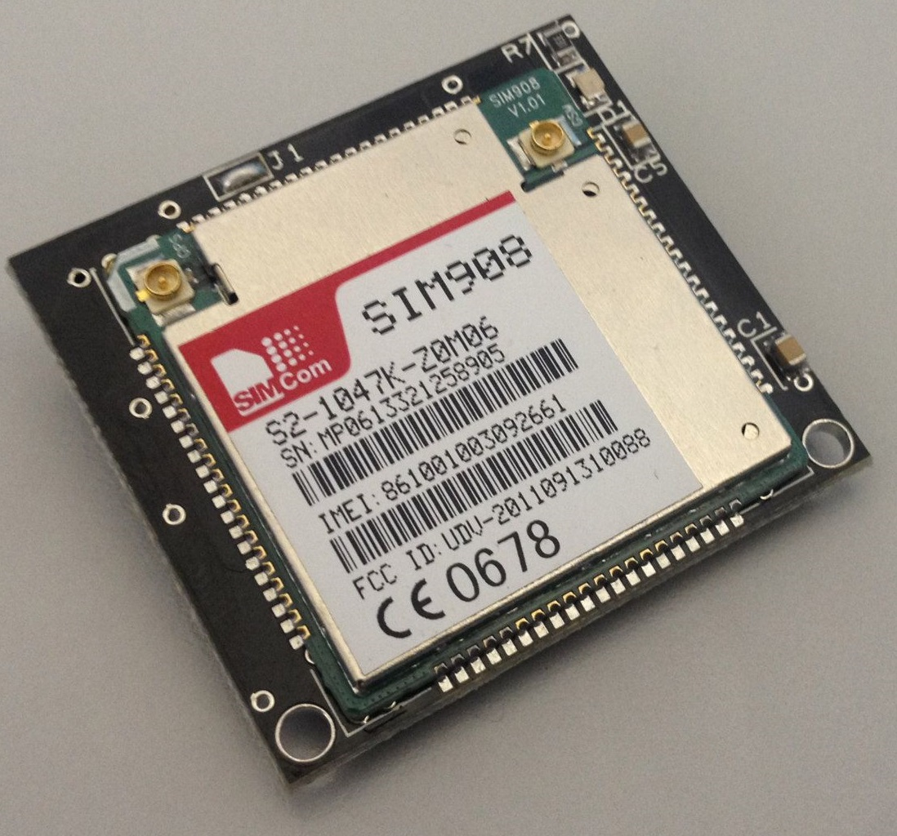
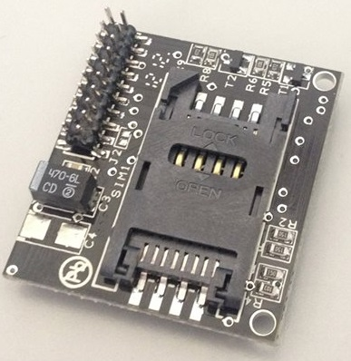
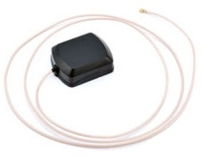
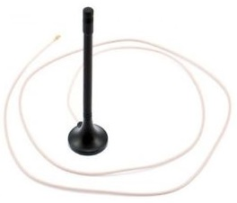
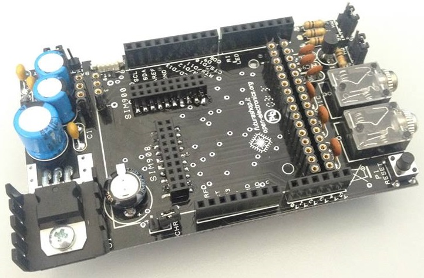
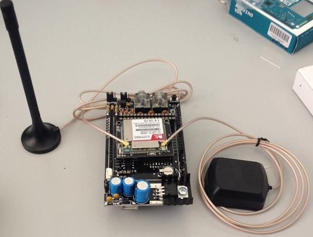
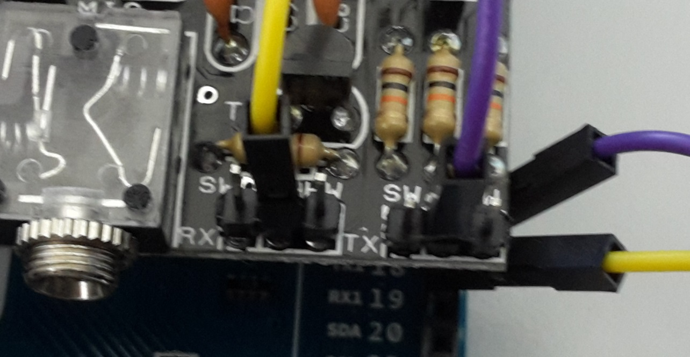
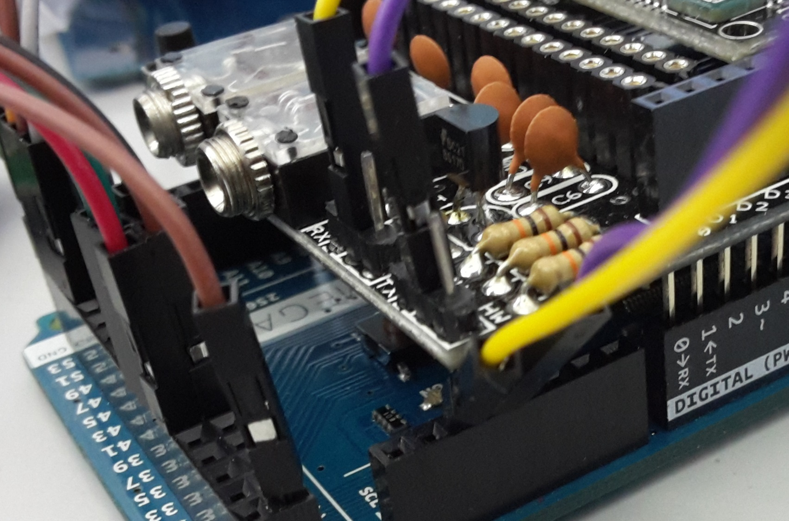
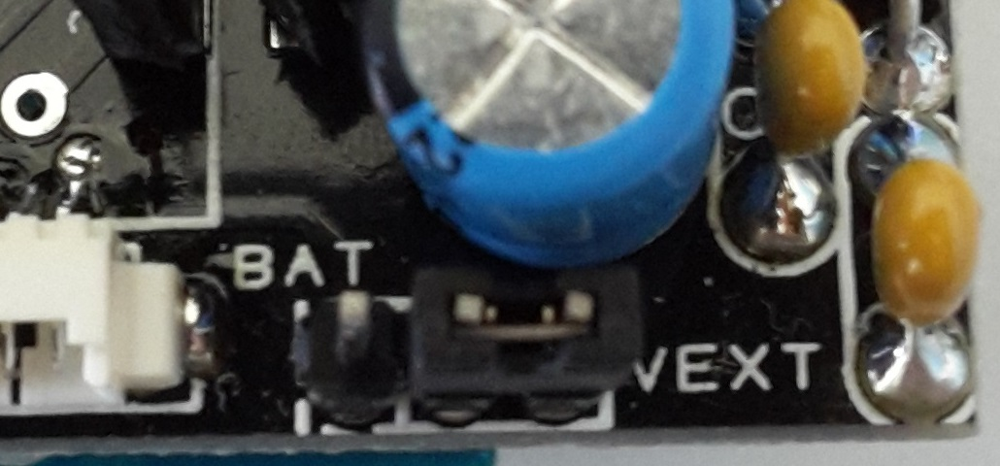
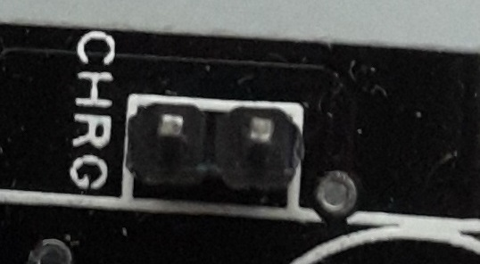

Per utilizzare i protocolli GSM, GPRS e GPS con Arduino si può utilizzare un modulo SIM908 che comprende al suo interno le funzionalità di un modulo SIM900, ovvero GSM e GPRS, con in aggiunta il sistema di posizionamento GPS. Per connettere questo modulo ad Arduino servono un antenna GSM, una GPS e una shield GSMSPRSSHIELDV2. Shield per Arduino in grado di accogliere i moduli GSM/GPRS & GPS della famiglia SIMCom come il SIM900 (con funzionalità GSM/GPRS) e SIM908 (con funzionalità GSM/GPRS & GPS) che, opportunamente controllato tramite un’interfaccia seriale ed una UART per la gestione della connessione, permette di effettuare chiamate voce, inviare SMS o effettuare delle connessioni alla rete Internet. La disponibilità di nuove librerie di supporto allo sviluppo software, permettono grande flessibilità nella configurazione dei moduli e nello sviluppo di applicazioni voce, dati e basate su WEB. Con delle semplici chiamate a funzioni di alto livello è possibile, ad esempio, leggere un SMS ricevuto o avviare una chiamata ed effettuare tutte le altre operazioni eseguite da un normale cellulare. La scheda, compatibile con Arduino Duemilanove, Arduino UNO, Arduino MEGA, ecc... dispone di due prese per il flusso audio analogico. Grazie a un microfono e ad un auricolare dotati di jack da 3,5 mm (è sufficiente la cuffia standard per computer), è possibile effettuare una chiamata voce a tutti gli effetti. Nel caso di ricezione di una chiamata si udrà attraverso le cuffie una suoneria che avvisa della chiamata in arrivo. La shield comprende il condensatore ad elevata capacità dedicato all' RTC (Real Time Clock) previsto all’interno del SIM900 e del SIM908. Il condensatore permette di mantenere aggiornata l'ora anche in assenza di alimentazione. L’intero circuito funziona con una tensione di alimentazione di 12 Vdc fornita direttamente dalla scheda Arduino. Durante le operazioni più pesanti dal punto di vista dei consumi di corrente, come l’utilizzo del GPRS, il modulo assorbe picchi di corrente di circa 1-1.2A, dunque è necessario che la sorgente di alimentazione sia in grado di fornire tale intensità di corrente. La shield prevede un connettore per il collegamento di una batteria esterna al litio, ricaricabile solamente con SIM908, in quanto il modulo integra un circuito di ricarica dedicato. La tensione necessaria per la ricarica della batteria viene prelevata direttamente dalla scheda Arduino (dal pin Vin). L’ingombro massimo dello shield è di 100 x 57 mm. La scheda è predisposta per accogliere uno dei seguenti moduli GSM (la scelta è funzione delle proprie esigenze): FT900M, FT971 e TDGGSM_900. La batteria da utilizzare deve essere di tipo ricaricabile al litio con tensione nominale di 3,7V.




Modificare la libreria GSMSHIELD: In GSM.h commentare Uno e decommentare Mega: //#define UNO #define MEGA In HWSerial.h decommentare Mega: #define MEGA#include "SIM900.h"
#include <SoftwareSerial.h>
#include "sms.h"
SMSGSM sms;
void setup() {
Serial.begin(9600);
Serial.println("GSM Shield testing.");
if (gsm.begin(2400)){
Serial.println("\nstatus=READY");
}
else Serial.println("\nstatus=IDLE");
}
void loop() {
if (sms.SendSMS("3999553322", "Arduino SMS")) Serial.println("\nSMS sent OK");
delay(10000);
}
#include "SIM900.h"
#include <SoftwareSerial.h>
#include "sms.h"
SMSGSM sms;
char smsbuffer[160];
char n[20];
void setup() {
Serial.begin(9600);
Serial.println("GSM Shield testing.");
if (gsm.begin(2400)) Serial.println("\nstatus=READY");
else Serial.println("\nstatus=IDLE");
}
void loop() {
if(gsm.readSMS(smsbuffer, 160, n, 20))
{
Serial.println(n); // Numero di telefono
Serial.println(smsbuffer); // Messaggio ricevuto
}
delay(1000);
}
Leggere un qualsiasi messaggio a scelta:
#include "SIM900.h"
#include <SoftwareSerial.h>
#include "sms.h"
SMSGSM sms;
char number[]="3921237567";
char message[180];
char pos;
void setup() {
Serial.begin(9600);
Serial.println("GSM Shield testing.");
if (gsm.begin(2400)) Serial.println("\nstatus=READY");
else Serial.println("\nstatus=IDLE");
}
void loop() {
pos=1;
message[0]='\0';
sms.GetSMS((int)pos,number,message,180);
Serial.print("NUOVO MESSAGGIO, POS=");
Serial.print((int)pos);
Serial.print(" NUMERO=");
Serial.println((String)number);
Serial.println((String)message);
delay(5000);
}
#include "SIM900.h"
#include <SoftwareSerial.h>
#include "gps.h"
GPSGSM gps;
char lon[15];
char lat[15];
char alt[15];
char time[20];
char vel[15];
char msg1[5];
char msg2[5];
char stat;
char inSerial[20];
boolean started=false;
void setup() {
Serial.begin(9600);
Serial.println("GSM Shield testing.");
//Start configuration of shield with baudrate.
//For http uses is raccomanded to use 4800 or slower.
if (gsm.begin(2400)){
Serial.println("\nstatus=READY");
gsm.forceON(); //To ensure that SIM908 is not only in charge mode
started=true;
}
else Serial.println("\nstatus=IDLE");
started=true;
if(started){
//GPS attach
if (gps.attachGPS()) Serial.println("status=GPSREADY");
else Serial.println("status=ERROR");
delay(20000); //Time for fixing
stat=gps.getStat();
if(stat==1)
Serial.println("NOT FIXED");
else if(stat==0)
Serial.println("GPS OFF");
else if(stat==2)
Serial.println("2D FIXED");
else if(stat==3)
Serial.println("3D FIXED");
delay(5000);
}
}
void loop() {
gps.getPar(lon,lat,alt,time,vel);
Serial.print("Latitudine: ");
Serial.println(conversione(lat));
Serial.print("Longitudine: ");
Serial.println(conversione(lon));
Serial.println("");
delay(1000);
}
float conversione(char valore[15]){
char valore2[13];
int dd=atoi(valore)/100;
int mm=atoi(valore)-(dd*100);
for(int i=0; i<13;i++){
valore2[i]=valore[i+5];
}
float virgola=atof(valore2);
while(virgola>1) virgola/=10;
float tot= mm+virgola;
float risultato=(float)(dd+tot/60);
return risultato;
}
{kind=link}
{kind=link}